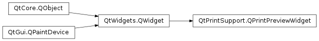

QPrintPreviewWidget¶
Synopsis¶
Functions¶
- def
currentPage() - def
orientation() - def
pageCount() - def
viewMode() - def
zoomFactor() - def
zoomMode()
Slots¶
- def
fitInView() - def
fitToWidth() - def
print_() - def
setAllPagesViewMode() - def
setCurrentPage(pageNumber) - def
setFacingPagesViewMode() - def
setLandscapeOrientation() - def
setOrientation(orientation) - def
setPortraitOrientation() - def
setSinglePageViewMode() - def
setViewMode(viewMode) - def
setZoomFactor(zoomFactor) - def
setZoomMode(zoomMode) - def
updatePreview() - def
zoomIn([zoom=1.1]) - def
zoomOut([zoom=1.1])
Signals¶
- def
paintRequested(printer) - def
previewChanged()
Detailed Description¶
The
PySide2.QtPrintSupport.QPrintPreviewWidgetclass provides a widget for previewing page layouts for printer output.
PySide2.QtPrintSupport.QPrintPreviewDialoguses aPySide2.QtPrintSupport.QPrintPreviewWidgetinternally, and the purpose ofPySide2.QtPrintSupport.QPrintPreviewWidgetis to make it possible to embed the preview into other widgets. It also makes it possible to build a different user interface around it than the default one provided withPySide2.QtPrintSupport.QPrintPreviewDialog.Using
PySide2.QtPrintSupport.QPrintPreviewWidgetis straightforward:
Create the
PySide2.QtPrintSupport.QPrintPreviewWidgetConstruct the
PySide2.QtPrintSupport.QPrintPreviewWidgeteither by passing in an existingPySide2.QtPrintSupport.QPrinterobject, or havePySide2.QtPrintSupport.QPrintPreviewWidgetcreate a default constructedPySide2.QtPrintSupport.QPrinterobject for you.Connect the
PySide2.QtPrintSupport.QPrintPreviewWidget.paintRequested()signal to a slot.When the widget needs to generate a set of preview pages, a
PySide2.QtPrintSupport.QPrintPreviewWidget.paintRequested()signal will be emitted from the widget. Connect a slot to this signal, and draw onto thePySide2.QtPrintSupport.QPrinterpassed in as a signal parameter. CallQPrinter.newPage(), to start a new page in the preview.
-
class
PySide2.QtPrintSupport.QPrintPreviewWidget(printer[, parent=nullptr[, flags=Qt.WindowFlags()]])¶ -
class
PySide2.QtPrintSupport.QPrintPreviewWidget([parent=nullptr[, flags=Qt.WindowFlags()]]) Parameters: - flags –
PySide2.QtCore.Qt.WindowFlags - printer –
PySide2.QtPrintSupport.QPrinter - parent –
PySide2.QtWidgets.QWidget
Constructs a
PySide2.QtPrintSupport.QPrintPreviewWidgetbased onprinterand withparentas the parent widget. The widget flagsflagsare passed on to thePySide2.QtWidgets.QWidgetconstructor.See also
QWidget.setWindowFlags()This is an overloaded function.
This will cause
PySide2.QtPrintSupport.QPrintPreviewWidgetto create an internal, default constructedPySide2.QtPrintSupport.QPrinterobject, which will be used to generate the preview.- flags –
-
PySide2.QtPrintSupport.QPrintPreviewWidget.ViewMode¶ This enum is used to describe the view mode of the preview widget.
Constant Description QPrintPreviewWidget.SinglePageView A mode where single pages in the preview is viewed. QPrintPreviewWidget.FacingPagesView A mode where the facing pages in the preview is viewed. QPrintPreviewWidget.AllPagesView A view mode where all the pages in the preview is viewed.
-
PySide2.QtPrintSupport.QPrintPreviewWidget.ZoomMode¶ This enum is used to describe zoom mode of the preview widget.
Constant Description QPrintPreviewWidget.CustomZoom The zoom is set to a custom zoom value. QPrintPreviewWidget.FitToWidth This mode fits the current page to the width of the view. QPrintPreviewWidget.FitInView This mode fits the current page inside the view.
-
PySide2.QtPrintSupport.QPrintPreviewWidget.currentPage()¶ Return type: PySide2.QtCore.intReturns the currently viewed page in the preview.
-
PySide2.QtPrintSupport.QPrintPreviewWidget.fitInView()¶ This is a convenience function and is the same as calling
setZoomMode(QPrintPreviewWidget::FitInView).
-
PySide2.QtPrintSupport.QPrintPreviewWidget.fitToWidth()¶ This is a convenience function and is the same as calling
setZoomMode(QPrintPreviewWidget::FitToWidth).
-
PySide2.QtPrintSupport.QPrintPreviewWidget.orientation()¶ Return type: PySide2.QtPrintSupport.QPrinter.OrientationReturns the current orientation of the preview. This value is obtained from the
PySide2.QtPrintSupport.QPrinterobject associated with the preview.
-
PySide2.QtPrintSupport.QPrintPreviewWidget.pageCount()¶ Return type: PySide2.QtCore.intReturns the number of pages in the preview.
-
PySide2.QtPrintSupport.QPrintPreviewWidget.paintRequested(printer)¶ Parameters: printer – PySide2.QtPrintSupport.QPrinter
-
PySide2.QtPrintSupport.QPrintPreviewWidget.previewChanged()¶
-
PySide2.QtPrintSupport.QPrintPreviewWidget.print_()¶ Prints the preview to the printer associated with the preview.
-
PySide2.QtPrintSupport.QPrintPreviewWidget.setAllPagesViewMode()¶ This is a convenience function and is the same as calling
setViewMode(QPrintPreviewWidget::AllPagesView).
-
PySide2.QtPrintSupport.QPrintPreviewWidget.setCurrentPage(pageNumber)¶ Parameters: pageNumber – PySide2.QtCore.intSets the current page in the preview. This will cause the view to skip to the beginning of
page.
-
PySide2.QtPrintSupport.QPrintPreviewWidget.setFacingPagesViewMode()¶ This is a convenience function and is the same as calling
setViewMode(QPrintPreviewWidget::FacingPagesView).
-
PySide2.QtPrintSupport.QPrintPreviewWidget.setLandscapeOrientation()¶ This is a convenience function and is the same as calling
setOrientation(QPrinter::Landscape).
-
PySide2.QtPrintSupport.QPrintPreviewWidget.setOrientation(orientation)¶ Parameters: orientation – PySide2.QtPrintSupport.QPrinter.OrientationSets the current orientation to
orientation. This value will be set on thePySide2.QtPrintSupport.QPrinterobject associated with the preview.
-
PySide2.QtPrintSupport.QPrintPreviewWidget.setPortraitOrientation()¶ This is a convenience function and is the same as calling
setOrientation(QPrinter::Portrait).
-
PySide2.QtPrintSupport.QPrintPreviewWidget.setSinglePageViewMode()¶ This is a convenience function and is the same as calling
setViewMode(QPrintPreviewWidget::SinglePageView).
-
PySide2.QtPrintSupport.QPrintPreviewWidget.setViewMode(viewMode)¶ Parameters: viewMode – PySide2.QtPrintSupport.QPrintPreviewWidget.ViewModeSets the view mode to
mode. The default view mode isSinglePageView.
-
PySide2.QtPrintSupport.QPrintPreviewWidget.setZoomFactor(zoomFactor)¶ Parameters: zoomFactor – PySide2.QtCore.qrealSets the zoom factor of the view to
factor. For example, a value of 1.0 indicates an unscaled view, which is approximately the size the view will have on paper. A value of 0.5 will halve the size of the view, while a value of 2.0 will double the size of the view.
-
PySide2.QtPrintSupport.QPrintPreviewWidget.setZoomMode(zoomMode)¶ Parameters: zoomMode – PySide2.QtPrintSupport.QPrintPreviewWidget.ZoomModeSets the zoom mode to
zoomMode. The default zoom mode isFitInView.
-
PySide2.QtPrintSupport.QPrintPreviewWidget.updatePreview()¶ This function updates the preview, which causes the
PySide2.QtPrintSupport.QPrintPreviewWidget.paintRequested()signal to be emitted.
-
PySide2.QtPrintSupport.QPrintPreviewWidget.viewMode()¶ Return type: PySide2.QtPrintSupport.QPrintPreviewWidget.ViewModeReturns the current view mode. The default view mode is
SinglePageView.
-
PySide2.QtPrintSupport.QPrintPreviewWidget.zoomFactor()¶ Return type: PySide2.QtCore.qrealReturns the zoom factor of the view.
-
PySide2.QtPrintSupport.QPrintPreviewWidget.zoomIn([zoom=1.1])¶ Parameters: zoom – PySide2.QtCore.qrealZooms the current view in by
factor. The default value forfactoris 1.1, which means the view will be scaled up by 10%.
-
PySide2.QtPrintSupport.QPrintPreviewWidget.zoomMode()¶ Return type: PySide2.QtPrintSupport.QPrintPreviewWidget.ZoomModeReturns the current zoom mode.
-
PySide2.QtPrintSupport.QPrintPreviewWidget.zoomOut([zoom=1.1])¶ Parameters: zoom – PySide2.QtCore.qrealZooms the current view out by
factor. The default value forfactoris 1.1, which means the view will be scaled down by 10%.
© 2018 The Qt Company Ltd. Documentation contributions included herein are the copyrights of their respective owners. The documentation provided herein is licensed under the terms of the GNU Free Documentation License version 1.3 as published by the Free Software Foundation. Qt and respective logos are trademarks of The Qt Company Ltd. in Finland and/or other countries worldwide. All other trademarks are property of their respective owners.